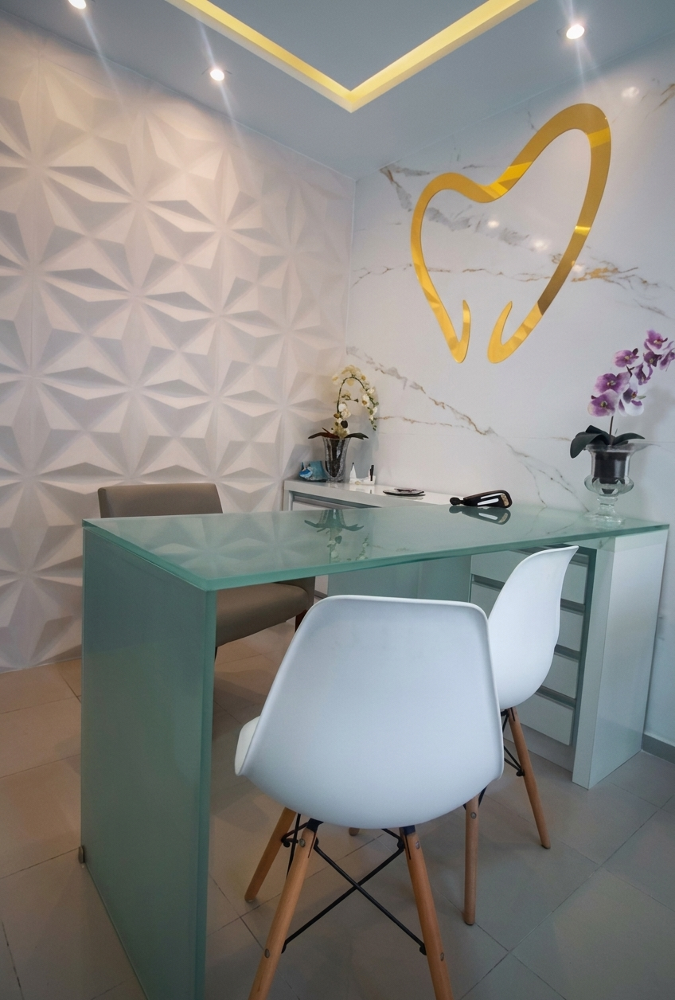
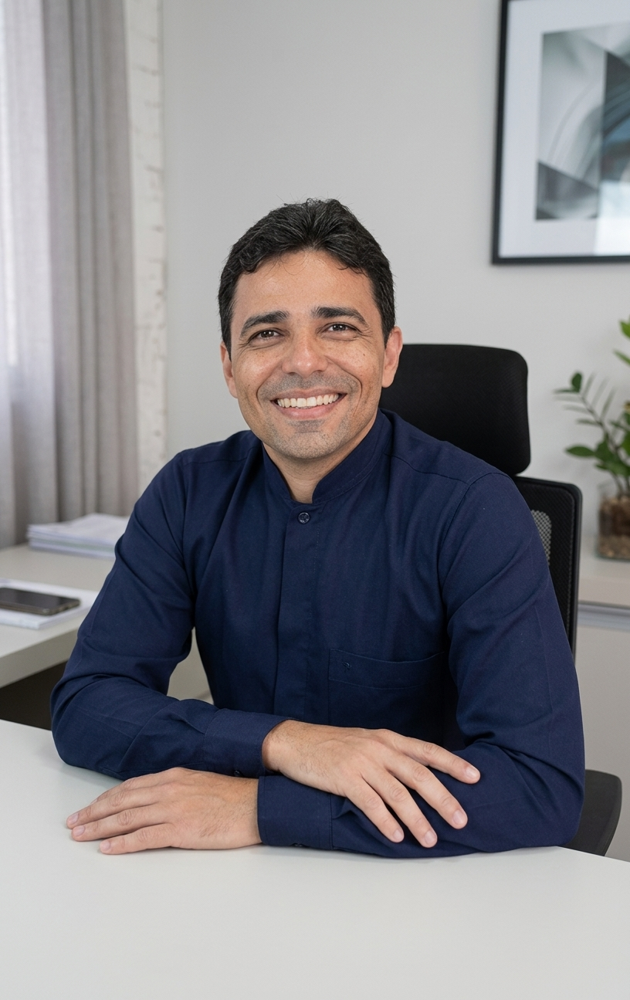

Implantes dentários
Planejamento digital e soluções para reposição de dentes, com acompanhamento em cada etapa.
Conhecer implantesHá mais de 25 anos, o Dr. Paulo Camurça une odontologia especializada, tecnologia de planejamento digital e atendimento humanizado para cuidar do seu sorriso em três unidades em Fortaleza.

Cuidados odontológicos com planejamento individual, do diagnóstico à conclusão do tratamento.
Planejamento digital e soluções para reposição de dentes, com acompanhamento em cada etapa.
Conhecer implantesTratamento endodôntico com a possibilidade de utilização do Laser PDT, quando indicado.
Entender o tratamentoOpções fixas, flexíveis e removíveis, planejadas conforme a necessidade de cada paciente.
Ver opções de prótesePlanejamento digital aplicado a procedimentos de implantodontia, com mais previsibilidade.
Saber como funcionaO planejamento é feito com apoio de scanner 3D e tomografia computadorizada, permitindo estudar a estrutura óssea antes do procedimento e organizar cada etapa junto ao paciente.
Uma visão geral de como o tratamento costuma ser conduzido, do primeiro contato à colocação do dente.
Avaliação clínica e planejamento individual do caso.
Análise da estrutura óssea e planejamento detalhado do procedimento.
Realização do procedimento conforme o que foi planejado.
Período necessário para a integração do implante ao osso.
Instalação da prótese definitiva conforme planejado.
A cirurgia guiada utiliza o planejamento digital para conduzir o procedimento com mais precisão e organização, seguindo o que foi definido na etapa de avaliação. Como em qualquer procedimento cirúrgico, os resultados variam conforme cada caso.
O tratamento de canal (endodontia) é indicado quando a polpa do dente está inflamada ou infectada. Em alguns casos, o protocolo pode incluir o Laser PDT, uma tecnologia complementar utilizada quando clinicamente indicada.
A proposta é explicar cada etapa em linguagem simples, para que o paciente entenda o que está sendo feito e por quê.
Opções planejadas conforme a necessidade e o histórico de cada paciente.
Solução fixada sobre dentes remanescentes ou implantes.
Sem estrutura metálica aparente, quando indicada para o caso.
Alternativa que pode ser retirada pelo próprio paciente.
Recobrimento indicado para restaurar forma e função do dente.
Espaço reservado para fotos reais da clínica, equipamentos e procedimentos.
Imagem ilustrativa — Consultório (foto real a ser adicionada)

CRO 3750/CE
Há 25 anos cuidando de sorrisos com tecnologia de ponta e atendimento humanizado.
| Dia | Horário |
|---|---|
| Segunda a sexta | 08:00 – 18:00 |
| Sábado | 08:00 – 12:00 |
| Domingo | Fechado |
Três unidades em Fortaleza para atender você.
Basta enviar uma mensagem pelo WhatsApp informando a unidade de sua preferência. Nossa equipe confirma o melhor horário disponível.
Temos três unidades em Fortaleza: Aldeota, José Walter e Barra do Ceará. Cada uma possui endereço e link direto para o Google Maps nesta página.
Implantes dentários com planejamento digital, tratamento de canal (com possibilidade de Laser PDT), próteses fixas, flexíveis e removíveis, coroas e cirurgia guiada.
O planejamento utiliza scanner 3D e tomografia computadorizada para estudar a estrutura óssea antes do procedimento, contribuindo para maior precisão e organização da cirurgia.
É uma técnica que utiliza o planejamento digital para conduzir a colocação dos implantes com mais previsibilidade, seguindo o que foi definido na etapa de planejamento.
É o tratamento endodôntico tradicional com o uso complementar do Laser PDT, tecnologia que pode fazer parte do protocolo quando clinicamente indicada.
De segunda a sexta, das 8h às 18h. Aos sábados, das 8h às 12h. Aos domingos, não há atendimento.
Fale com a nossa equipe e agende uma avaliação na unidade mais próxima de você.